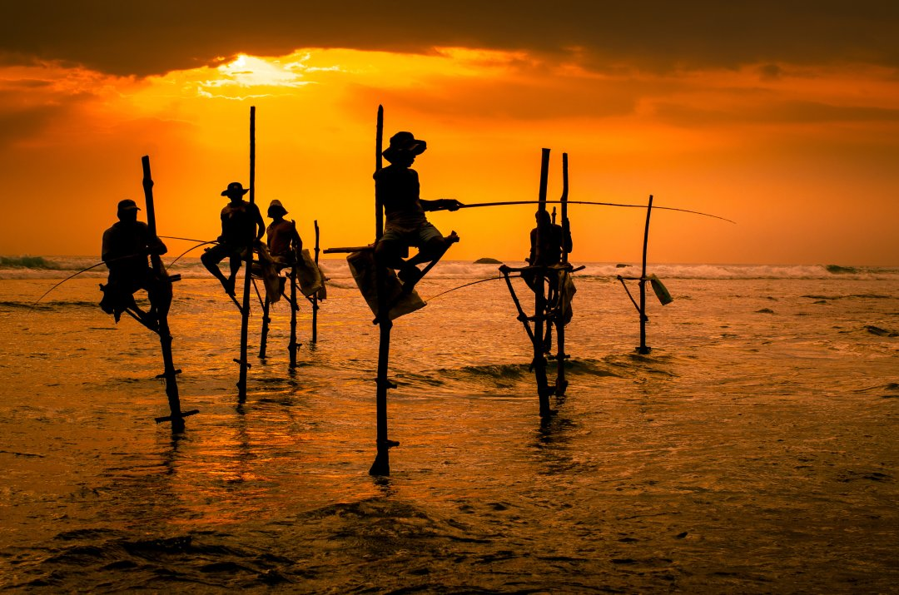
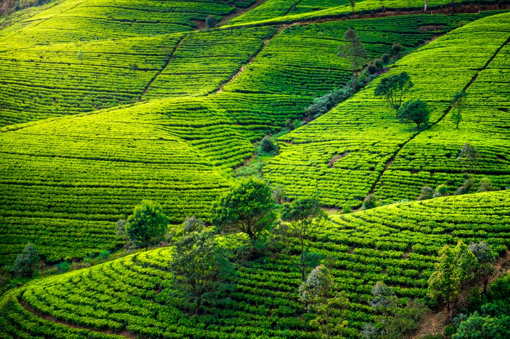

Sri Lanka, often called the "Pearl of the Indian Ocean," is a stunning island nation in South Asia. Known for its breathtaking beaches, lush tea plantations, and vibrant cultural heritage, Sri Lanka offers a blend of natural beauty and rich history. The island is home to eight UNESCO World Heritage Sites, including ancient cities like Anuradhapura and Sigiriya. Its diverse wildlife includes elephants, leopards, and vibrant bird species, often seen in national parks like Yala and Udawalawe. Sri Lanka's cuisine, famous for aromatic spices and flavors, reflects its multicultural heritage. Warm hospitality and captivating landscapes make it a must-visit destination.